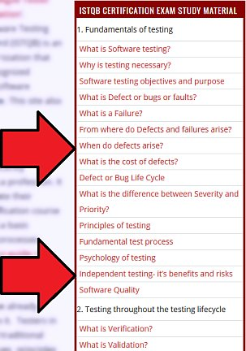

![Genislab]() Genislab Technologies
Genislab TechnologiesISTQB Certification is an internationally recognized software testing certification which is an essential part of QA Trainings in many organizations. ISTQB certification is also important for candidates looking for a job as a Software Tester. This site contains everything you need to know about the ISTQB exam including the study material / study guide you need in order to successfully pass the ISTQB Foundation Level exam. You can go through each topic in a sequence by clicking the “<< Previous Topic” and “Next Topic >>” links at the top and bottom of the page.
ISTQB has 3 levels of certification – Foundation Level, Advanced Level and Expert Level.
There is no educational or other pre-requisite for taking the Foundation Level exam. ISTQB recommends candidates to have 6 months of work experience before they take up the certification but this is not a requirement.
Launch the ISTQB Foundation Level study material >>
OR
Check out the links below for more details regarding ISTQB:
- What is ISTQB Certification?
- Benefits of a software testing certification like ISTQB
- ISTQB certification – Foundation level syllabus
- ISTQB certification – How to enroll / register in India?
- What is the difference between ISTQB Certification and ISEB/BCS Certification and CTFL Certification?
- Contact details of ISTQB member boards in your country
- ISTQB exam dates in 2018 and Test Center locations for Foundation Level in India
- ISTQB exam dates in 2018 and Test Center locations for Advanced Level in India
If you are preparing for the ISTQB exam, you can follow the links in the menu titled “ISTQB Certification Exam Study Material” or choose a category below to go through each topic in that knowledge area.
If you find this site useful, please share our links with your friends.
Posts not related to the ISTQB certification can be found under the category Software Testing
The ISTQB Certification syllabus for Foundation Level comprises of the following categories of knowledge areas that are part of the exam:
- Fundamentals of testing
- Testing throughout the testing life cycle
- Static techniques
- Test design techniques
- Test Management
- Tool support for testing
Other popular articles:
- What is the ISTQB Agile Tester Extension Certification?
- ISTQB Foundation Level and Agile Tester Certification guide
- What is ISTQB certification? Is it a good Software Testing Certification?
- What is the difference between ISTQB Certification and ISEB/BCS Certification and CTFL Certification?
- How to apply for ISTQB Certification in India?
Neha says
Is this the updated course for foundation level exams in this year
manoj kumar says
Hi,
I want to write ISTQB Foundation level certification can anyone guide me please
divi arora says
what are the fee for foundationlevel exam? what what is ITB ISTQB? andis theirany UK Based Exam?
Chandra says
I have ISTQB CTFL exam in 2days. I don’t have any idea. Do we have any dumps that helps us in Clearing the exam in one attempt. Please help me out. Thanks in advance.
Revathi says
HI
I am living in visaghapatinam District, andhara pradesh . I want to write ISTQB, Foundation Level exam . Is it possible to write around my area.which syllabus i can follow and then cost of exam fees and how can i apply for the exam. kindly provide the exam nation site also please..
ISTQB Guide says
Please get in touch with the contact person at ISTQB for questions regarding your city, you can find the contact details here – http://tryqa.com/istqb-exam-dates-for-foundation-level-and-test-center-locations/
RAJYALAXMI PULI says
hi reenu,
can you plz let me know where did u take the course from
Reenu Agarwal says
Hi ,
I have taken ISTQB Foundation level Exam and passed with 92.5%. Thanks a lot for the course provided. It really helped .
Tarun says
Hi, did you follow the mock tests provided in this website? Are these sufficient? please provide any other reference mock tests for ISTQB foundation level exam
naga says
hi which course did you follow? can we get any questions in the exam if we prepare from mock test papers?
Mpumie says
Hi Team
Do you think I will get a job even if I don’t have experience if I did ISTQB foundation.
Regards
ISTQB Guide says
Hi, If you do not have any experience then its even more important to get ISTQB certified.
Having a certification does not guarantee a job however when there are 100s of applications for a job, recruiters give first preference to those who are certified since the recruiting team, interview panel, hiring manager cannot interview or go through 100s of candidates. They filter the candidates based on those who are certified since it established that certified candidates have good understanding of software testing concepts.
Certifications give you an added advantage over non certified candidates.
Sushmitha Venkatesh says
Hello team,
I have taken ISTQB foundation level certification and cleared it… I need my certificate what is the procedure?
Bhargavi says
Hi. How was the questions were ? Is it come from new syllabus or any questions from mock test ?
Archana says
Given the following code, which is true about the minimum number of test cases required for full statement and branch coverage:
Read P
Read Q
IF P+Q > 100 THEN
Print “Large”
ENDIF
If P > 50 THEN Print “P Large” ENDIF
a) 1 test for statement coverage, 3 for branch coverage
b) 1 test for statement coverage, 2 for branch coverage
c) 1 test for statement coverage, 1 for branch coverage
d) 2 tests for statement coverage, 3 for branch coverage
e) 2 tests for statement coverage, 2 for branch coverage
Can you explain statement and branch coverage using this example please
Bhargavi says
Answer is b.
Pooja says
Hi Team,
I am appearing for this Foundation Leval exam in this year. I wanted to know if the information/knowledge shared here is in line with the updated syllabus of ISTQB CFTL 2018
sravan says
until June 2019,u can follow old syllabus
Dhivya says
Hi
I am living in Nagapattinam District, Tamilnadu. I want to write ISTQB, Foundation Level. Is it possible to write around my area.
sravan says
S,where ever u want,u can write there but when u open the website for ITB,there u find exam location in Tamilnadu near by you.
Bhushan says
Hello Team,
I live in Pune, India. I would like to know the ISTQB foundation level exam schedule for year 2018 in my area. Could you guys please guide me through it.
Thanks.
ISTQB Guide says
You can now schedule the exam based on your convenience. In other words you can choose when you want to take the exam. You can enroll for the exam here – https://itb.formistry.com
nagendranr says
I find my actual work experience to be more valuable, and I don’t really feel like the ISTQB certification had added anything to how I test since it was mostly learning terminologies.
Mera Al-Qurneh says
I’m from Jordan , how i can pass the exam ??
ISTQB Guide says
You can get in touch with the ISTQB board for your country to find the details of registering for the exam. Contract details of member boards are given here – http://tryqa.com/istqb-member-boards-contact-details-in-countries-around-the-world/
If you don’t have a board in your country, you can take the exam through Pearson Vue – http://itskillz.com/how-to-register-for-istqb-exam-at-pearsonvue-center/
Chaitali B says
I want dumps required to pass ISTQB foundation level
ISTQB Guide says
You can get the dumps here – http://tryqa.com/istqb-dumps-download-mock-tests-and-sample-question-papers/
Venkat says
Hello Chaitali,
Can you guide me on how you registered ISTQB foundation level.
ISTQB Guide says
You can find ISTQB registration process details here – http://tryqa.com/istqb-certification-how-to-register-enroll-apply/
Vinod Gosavi says
Hi team,
I want to complete CTFL so please guide me or give me PDF files or any particular site to preparation for the same.
Regards
Vinod Gosavi
ISTQB Guide says
You can go through the topics listed on the right hand side, these topics cover everything for the CTFL exam or take a look at http://itskillz.com